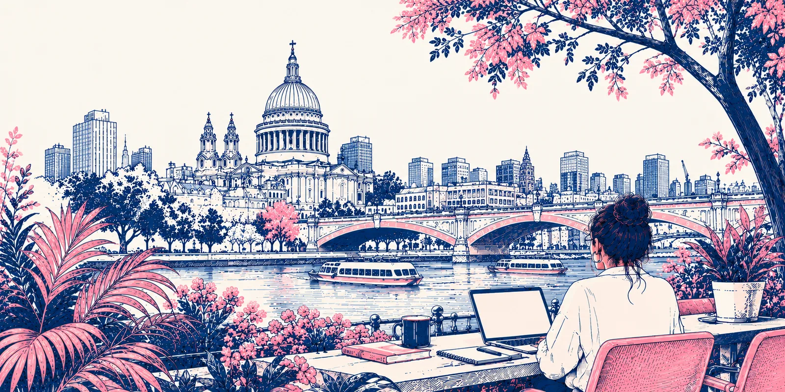
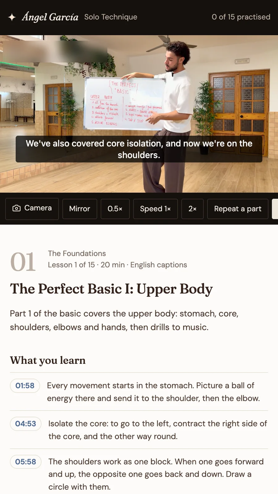

I design products,then I build them.
I combine design, code and behavioural insight to create digital products and services that are useful, inclusive and human. From banks to dance communities, I take ideas from complex systems to real products.

- 01Bachata ConnectFounder · design and code344 arrivals checked in over two afternoons, each by linking an NFC wristband to the app they were already logged in to

- 02Three artists, one codebaseDesign system · codeOne file per artist: colours, fonts, corners, language. A test checks every text colour against its background.

- 03The course playerProduct design · codeMirror the video, drop to half speed, loop a few seconds, or record yourself next to the lesson.

- 04Tap to connectPhysical and digitalAn NFC wristband that opens the right screen in the app: your pass at the door, what you have paid for, another dancer’s profile.

- 05TSB BankHead of Design, CX and Innovation1.8 → 4.6 App Store rating, after the platform migration locked customers out

- 06Oslo University HospitalLead service designer, Designit12 weeks → 6 days to diagnosis, now the national standard

- 07Amplifon companionLead product designer, SapientRazorfishSix international design awards for a companion to a hearing aid


A design system with accessibility in CI.Fifteen colour roles, three brands, one component library. Every pull request checks 86 colour pairs: each text colour on each background it sits on, in every palette. There were real failures behind it: our own brand gold reached only 2.6:1 as link text, and one artist’s grey sat between 3.6 and 4.1:1. Both are fixed, and the tests stop them coming back.
Claude in production.Expert feedback is written in Spanish, and most of the dancers reading it are not Spanish speakers. Now each one reads their review in their own language, translated on demand, and 325 reviews cost under one euro. Claude also turns class discussions into a digest for each artist.
A production platform, solo.Bachata Connect runs on Next.js and Supabase with row level security, in strict TypeScript. Every pull request has to pass a typecheck, and Playwright drives the critical journeys end to end. Python scripts load spreadsheets into Postgres, merge duplicate records and keep ticketing and video in sync.
The main repository is private while it holds participant data. The design system is public: the code and a live demo, with the contrast test running in CI. I am happy to walk through the main codebase live.
Operational logic has two states, and the unhappy one still sends the person somewhere.
The class door check at Bachata Week. Tap a wristband to see both outcomes.
In this class
Bought this add-on.
16:15 · Musicality Lab · Example teachers
Not on this list
Not booked on this class.
16:15 · Musicality Lab · Example teachers
// every text colour, on every ground, in every palette describe.each(palettes)('palette "%s"', (name, t) => { for (const role of TEXT_ROLES) { it(`${role} reads everywhere (≥ 4.5:1)`, () => { const worst = Math.min( ...GROUNDS.map((bg) => contrastRatio(t[role], t[bg])) ) expect(worst).toBeGreaterThanOrEqual(4.5) }) } })
The accessibility test that runs on every pull request. If a colour fails, the change cannot ship.

I am from Colombia, spent sixteen years in Norway and now live in London. My first job was as a developer at Opera Software, where I was employee 69 and worked on browsers for the Nintendo Wii and DS and for Motorola phones.
On the DSi I was the interaction designer: smooth scrolling, transitions that felt like a game, and pages you could browse with one hand. I have cared about how an interface feels in the hand ever since.
I moved from code into design, then into customer experience, and spent the last decade in financial services. Most of my work has been with people at difficult moments: borrowers in trouble, patients waiting for a diagnosis, older people adjusting to a hearing aid. That is where behaviour matters more than features.
I’ve led teams at two banks. I went back to building because AI has made shipping fast, and the hard part now is deciding what’s worth shipping. I have just finished an Executive MBA at Warwick Business School, where my research looked at why people avoid dealing with their money. I speak Spanish, English, Italian and Norwegian.
- 2023 – nowNeon Lighthouse, co-founder and director. AI product studio.
- 2023 – 2026Vanquis Bank, Head of Customer Experience. Products serving 1.7M+ customers, team of 15.
- 2018 – 2023TSB Bank, Head of Design, Customer Experience and Innovation.
- 2017 – 2018SapientRazorfish, Lead Product Designer. Amplifon.
- 2013 – 2017Designit, Oslo. Lead product and service designer, four direct reports.
- 2002 – 2013Opera Software, Oslo, Tokyo and Beijing. Developer, then interaction and UX designer.
 Keynote · CX Circle by Contentsquare
Keynote · CX Circle by ContentsquareAbout banks and other dinosaurs
On why NPS measures the bank's success rather than the customer's, why loyalty is not a 3% cashback offer, and why a bank's superpower is its people rather than its technology. Contentsquare wrote the talk up as a four-page feature in CX Circle magazine.
 2008 · Opera Software
2008 · Opera SoftwareThe Nintendo DSi browser
I was the interaction designer on the browser Opera built with Nintendo, working with their engineers in Tokyo. Two screens, a stylus and a games console: navigate on the bottom, read on the top, swap at any time, and a one-handed column view. Nintendo wanted it to feel fun and snappy, like a game, so we used hardware acceleration for the scrolling and the transitions.
 2016–2017 · Designit
2016–2017 · DesignitSAS EuroBonus loyalty
Redesigning the loyalty experience for Scandinavian Airlines, so points, status and rewards were something members could actually understand and use across the journey.